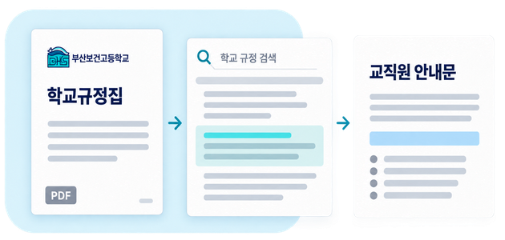

교사를 위한 AI 실습 연수
학교 규정 검색과안내문 작성 RAG의 원리를 배우고 NotebookLM에서 학교 자료를 검색합니다.
120분 · 이론과 실습
학교의 규정이

학교 자료 검색 결과에서 검색한 내용을 바탕으로 강의 교재 개념 설명과 실습 화면을 담은 PDF입니다. QR 코드로 이 사이트에 접속할 수 있습니다.
연수 홈 / 개념 이해
RAG와 NotebookLM RAG 구축에 필요한 구성과 도구별 역할을 이해하고, 학교 양식 문서 작성으로 연결합니다.
1. 데이터와 AI 2. RAG 처리 순서 3. 직접 구축하려면 4. 도구별 역할 5. 작성 요청 전달 6. 결과 검토
왜 필요한가
데이터가 필요한 이유 자료를 연결하지 않은 AI 답변에는 학교별 규정이나 적용 연도가 빠질 수 있습니다.
같은 질문 “수행평가에 결시한 학생의 추가 평가 원칙을 정리해 줘.”
자료 없이 질문 어느 학교·어느 학년도의 규정인지 알려주지 않았습니다. 일반적인 설명이 나오더라도 우리 학교에 적용되는지 확인하기 어렵습니다.
자료를 검색해 질문 학교규정집과 적용 지침에서 질문에 맞는 내용을 찾고, 검색한 내용을 활용해 답변을 구성할 수 있습니다. RAG는 이처럼 검색한 내용을 AI 입력에 함께 제공하는 방식입니다.
RAG 는 Retrieval-Augmented Generation의 줄임말입니다. 질문에 관련된 자료를 검색 해 AI에 맥락으로 제공 하고, 이를 활용해 답변을 생성 하는 방식입니다.
개념 출처: NIST RAG 정의 · 위 질문과 두 상황은 연수용 예시이며 실제 규정 답변이 아닙니다.
어떻게 작동하는가
RAG 처리 순서 질문과 관련된 문서나 구절을 검색한 후 AI 입력에 함께 포함합니다.
1 질문 학교·업무·기준 시점을 구체적으로 정합니다.
수행평가 결시 처리 원칙은? 2 데이터 검색 자료 모음에서 질문과 관련된 문서나 구절을 찾습니다.
Retrieval · 검색 3 검색 결과 제공 찾은 내용과 질문을 AI가 읽을 맥락으로 묶습니다.
Augmentation · 맥락 보강 4 답변 생성 AI가 전달받은 데이터를 사용해 내용을 정리합니다.
Generation · 생성 검색 전 확인 믿을 수 있는 자료, 적용 시점, 질문에 필요한 소스 범위. 잘못되거나 관련 없는 자료를 찾으면 답변도 빗나갈 수 있습니다.
검색·생성 후 확인 인용이 실제 주장을 뒷받침하는지, 예외·조건이 빠지지 않았는지 원문을 대조합니다. RAG는 정확성을 자동으로 보증하지 않습니다.
자료를 넣는 것과 모델을 추가 학습시키는 것은 다른가요? RAG의 핵심은 답변할 때 관련 자료를 찾아 제공하는 데 있습니다. 자료를 등록했다는 이유만으로 모델 자체가 다시 학습되거나 내용을 영구히 기억한다고 볼 수는 없습니다.
출처: Google Cloud RAG 설명 , NIST 정의 · 이 흐름은 개념 설명이며 NotebookLM 내부 알고리즘의 상세 구조를 단정하는 도식이 아닙니다.
직접 구축할 때 필요한 것
검색부터 모델 연결과 운영까지 준비합니다 RAG를 직접 만들려면 자료, 검색 기능, 생성 모델과 이들을 연결할 프로그램이 필요합니다.
고가 GPU나 벡터 데이터베이스가 꼭 필요한가요? 모델 API를 사용하면 모델을 실행할 GPU를 직접 갖추지 않아도 됩니다. 검색도 키워드 방식으로 구성할 수 있으며, 의미 검색을 선택할 때 임베딩과 벡터 검색 기능이 필요합니다. 별도 벡터 데이터베이스가 모든 RAG의 필수 조건은 아닙니다. 규모와 선택한 모델·검색 방식에 따라 필요한 자원이 달라집니다.
RAG와 NotebookLM은 어떤 관계인가요? RAG는 검색한 내용을 생성 모델의 입력에 제공하는 설계 방식입니다. NotebookLM은 자료 등록·검색·정리 기능을 제공하는 제품입니다. 자료를 등록했다고 모델을 다시 학습한 것은 아니며, NotebookLM 실습을 자체 RAG 시스템 개발과 동일하게 설명하지 않습니다.
출처: NIST RAG 정의 · Microsoft RAG 구성·검색·운영 안내 . NotebookLM의 내부 검색 알고리즘을 단정하는 설명은 아닙니다.
이번 연수에서 맡길 역할
NotebookLM으로 준비하고 외부 AI로 완성합니다 2시간 동안 자료 검색·작성 요청·양식 완성을 익힙니다. 검색과 생성에는 준비된 서비스를 사용합니다.
양식은 문서의 구조 제목·항목·표·결재란처럼 유지할 모양을 정합니다. 검색용 PDF와 편집할 원본 양식의 역할을 구분합니다.
스킬은 작업 절차 지원되는 환경에서 문서를 읽고 만들고 검사하는 지침과 도구입니다. 자료 검색이나 파일 생성 기능을 지시문만으로 새로 만들지는 않습니다.
연결 범위 이 실습은 기성 서비스를 조합한 업무 흐름입니다. 두 서비스 사이의 전달은 사람이 하며, 외부 AI가 원래 노트북 전체를 자동 검색하도록 연결한 시스템은 아닙니다.
제품 기능: Google 소스 기반 채팅·인용 안내 · 역할 분담은 이번 연수의 진행 방식입니다. NotebookLM에도 문서 생성 관련 기능이 추가되고 있으므로 제품 간 기능을 고정된 경계로 설명하지 않습니다.
검색을 문서 작성으로 연결하기
외부 AI가 바로 작업할 수 있는 요청을 만듭니다 업무 상황을 설명하면 NotebookLM이 관련 자료를 찾고, 외부 AI에 전달할 작성 요청을 정리하도록 합니다.
자료에서 찾을 내용 적용할 지침, 원본 서식의 필수 항목, 기존 문서의 작성 방식. 필요한 원문 발췌와 자료명·쪽도 요청에 넣습니다.
이번 업무의 입력값 목적·일시·장소·대상·인원·예산을 따로 적습니다. 기존 예시의 날짜·이름·금액을 이번 업무 사실로 옮기지 않습니다.
작성 조건과 검토 기준 유지할 항목·표 구조·출력 형식, 미확정 정보 처리, 날짜·시간·총인원 검사 방법을 지정합니다.
함께 전달할 파일 외부 AI에 작성 요청과 필요한 원문, 원본 양식을 함께 전달합니다. NotebookLM의 인용 번호만으로 원문 전체가 전달되지는 않습니다.
NotebookLM에 할 요청 “등록한 지침·작성 예시·양식을 참고해서, 이번 업무 문서를 외부 AI로 완성할 작업 지시문을 만들어 줘. 항목별 작성 내용, 필요한 원문 발췌, 추가 입력할 정보와 파일 검토 기준을 포함해 줘.”
실제 테스트에서는 어디까지 확인했나요? 2026.10.18. 현장체험학습 매뉴얼의 「서식 7: 사전답사 계획서」로 테스트했습니다. NotebookLM이 작성 요청을 만들고, 외부 AI에 요청과 원본 PDF를 전달해 DOCX·PDF를 생성했습니다. 가상 사례의 날짜·시간·인원을 바꾸자 본문과 일정표에도 반영됐고, 이전 값이 남지 않았는지 검사했습니다.
이 테스트는 Claude Pro 계정에서 PDF 서식을 DOCX로 재구성한 사례입니다. HWPX 원본 양식 보존이나 무료 계정에서의 동일 실행까지 검증한 결과는 아닙니다.
테스트에 사용한 공개 원본 서식 보기 · PDF 67페이지 / 인쇄 65쪽 업무 자동화 RAG는 사용할 내용을 찾는 데 쓰입니다. 문서 파일 생성과 양식 반영은 별도의 작업입니다. 다음 업무에서는 입력값을 바꾸어 같은 작성 요청과 양식을 재사용합니다.
학교 업무 활용
검색 결과와 완성 문서를 검토합니다 검색한 원문 두 곳을 확인하고, 완성한 문서에는 바뀐 조건과 이전 값이 남지 않았는지 대조합니다.
질문의 범위를 정하기 학교급·업무·적용 학년도를 적습니다. “규정 알려줘”보다 구체적으로 묻습니다.
관련 소스만 선택하기 학교규정집·개정 사항·교육청 지침을 구분합니다. 관계없는 자료를 함께 적용하지 않습니다.
인용 두 곳을 직접 열기 답변과 원문의 문맥을 비교합니다. 날짜·숫자·예외·적용 대상이 맞는지 확인합니다.
모르는 내용은 확인 필요로 남기기 자료에 없는 담당자·일정·기관 승인 여부를 만들어 채우지 않습니다. 실제 업무 적용은 담당자가 검토합니다.
내용은 맞아 보이는데 인용만 있으면 충분한가요? 인용은 검증할 수 있는 길을 제공합니다. 인용된 문장이 답변을 뒷받침하는지 확인하는 일은 여전히 필요합니다. 자료 자체의 최신성·적용 범위도 함께 확인하세요.
확인 문제 학교규정집을 올린 뒤, 답변에 인용이 붙었습니다. 이제 바로 업무에 사용해도 될까요?
해설 아직입니다. 인용의 원문과 문맥, 적용 시점, 누락된 조건을 대조하고 실제 업무 사용 전 담당자가 검토합니다.
원문 확인 기능: Google 인용 안내 · 업무 절차와 확인 질문은 연수용 구성입니다.
연수 홈 / 자료실
자료실 학교·교육청·법령 자료 11종. 다운로드 전에 적용 시점과 공식 원문을 확인하세요.
자료명 검색
등록 전 확인할 사항과 자료 활용 방법 공개 자료도 최신본인지 확인하세요. 학교 홈페이지 공개본의 개정 여부는 학교 담당자에게 확인할 수 있습니다. 법령·조례의 시행일과 지침의 적용 학년도를 질문에 적고, 서로 다른 기준은 합쳐 단정하지 않습니다.
학교 규정집의 표지는 2026학년도로 되어 있지만 일부 머리말에는 2025학년도 표기가 남아 있습니다. 같은 게시글의 개정 사항과 함께 대조하고 학교 적용 최신본을 확인하세요.
배포용 자료에는 학생·교직원의 개인 명단, 상담 기록, 실제 성적 자료를 포함하지 않습니다. PDF·TXT 변환본은 검색 편의를 위한 사본이며 원문이 최종 확인 기준입니다. HWP·HWPX를 PDF로 바꿨다면 표와 각주를 대조하세요.
자료 묶음의 목록 파일에서 원문 URL·다운로드일·형식·해시를 확인할 수 있습니다. 변경된 자료는 원문에서 다시 받고 노트북의 기존 소스를 교체하세요.
자료 출처·파일 목록 내려받기 연수 홈 / 데이터 검색 연습
데이터 검색 연습 공개 자료를 등록하고 필요한 데이터를 검색한 뒤, 인용을 눌러 원문과 대조하세요.
17단계 실제 화면 따라 하기
자료 다운로드부터 등록·선택·질문·인용·저장·작업 요청까지, 한 화면씩 진행합니다.
01 자료를 준비하고 등록하기아래 공개 자료실에서 학교·교육청·법제처 자료를 받습니다. HWP·HWPX 원본은 읽기용 PDF 또는 TXT 변환본과 구분합니다.
NotebookLM을 열고 새 노트북을 만듭니다. 노트북 제목에 업무와 기준일을 적습니다. 소스 추가에서 다운로드한 PDF·TXT를 등록합니다. 자료 제목·시행일·적용 대상을 확인합니다. 공개 자료실로 이동 02 필요한 자료만 선택해 검색하기처음부터 모든 규정을 한꺼번에 적용하지 않습니다. 질문의 학교급·업무·시점을 정하고 소스 패널에서 관련 자료를 선택합니다.
데이터 검색 요청 복사 활동: 학교 자료만 선택한 답변과 학교·교육청 자료를 함께 선택한 답변을 비교합니다.
실제 캡처 질문: “부산보건고 학교규정집의 수행평가 결시 처리에서 추가 평가의 기본 원칙을 찾아줘.” 관련 소스 3개를 선택한 뒤 답변의 인용을 확인했습니다.
03 인용을 눌러 원문 대조하기답변의 인용 번호를 눌러 원문을 엽니다. 해당 조항이 답변을 실제로 뒷받침하는지, 예외나 적용 대상이 빠졌는지 확인합니다.
완료 기준: 검색 결과 2개를 원문과 대조하고, 자료에 없는 질문에는 ‘추가 확인 필요’를 표시합니다.
04 검색한 데이터를 외부 AI에 전달하기확인한 발췌문·출처·문서 양식·검토 기준을 묶어 외부 AI에 전달합니다. NotebookLM 채팅에 요청해 작업 지시문을 만들 수 있지만 별도의 ‘프롬프트 생성 버튼’ 기능은 아닙니다.
작성 요청 생성 지침 복사
2026.10.14 실제 서비스 화면. 계정·배포 시점에 따라 화면과 메뉴 이름이 달라질 수 있습니다.
데이터 검색과 문서 작성 질문에 필요한 데이터를 검색하고, 검색 결과를 활용해 답변을 만드는 흐름입니다. 이 실습은 NotebookLM의 검색·인용을 활용하며, 외부 AI에 내용을 복사하면 그 AI는 전달받은 자료를 사용합니다. 외부 AI가 내 노트북을 자동 검색하도록 연결되는 것은 아닙니다.
연수 홈 / 스킬 목록
스킬 목록 Word·PPT·Excel·한글 문서 작업에 사용하는 스킬입니다.
수업 04 / 교직원 안내문 작성
교직원 안내문 작성 검색한 데이터와 출처를 입력해 외부 AI에 전달할 작업 요청을 만드세요.
입력 후 ‘작성 요청 만들기’를 누르면 결과가 표시됩니다.
결과를 복사해 실습에 사용하는 AI에 붙여 넣으세요.
외부 AI에서 초안 만들고 Word·PPT·Excel로 검사하기
Word · HWPX Word · 한글 필수 항목을 찾고 준비 사항·담당자·기한을 문서 양식에 반영합니다.
NotebookLM에서 필요한 데이터를 검색합니다. 작업 요청과 확인한 자료를 외부 AI에 전달합니다. 초안을 문서 편집 기능 또는 한글에서 다듬습니다. 확정 정보와 확인 필요 사항을 구분합니다. 실습 요청 복사 PowerPoint PowerPoint 같은 내용을 교직원 설명용 5장으로 재구성합니다. 파일 생성이 막히면 슬라이드별 표를 사용합니다.
대상과 발표 시간부터 정합니다. 슬라이드별 메시지 하나를 고릅니다. 발표자 메모와 참고 자료를 함께 붙입니다. PPT를 열어 글자·표·넘침을 확인합니다. 실습 요청 복사 Excel Excel 가상 예산 CSV를 계산 가능한 표로 바꿉니다. 합계와 수식을 직접 대조합니다.
CSV를 업로드하거나 내용을 붙여 넣습니다. 수량 × 단가 수식과 합계를 만듭니다. 예산 상한과 차액을 확인합니다. 빈 셀·문자 숫자·중복 행을 점검합니다. 가상 예산 CSV 실습 요청 복사 HWPX 자동화 확장 시연은 이렇게 진행합니다 공개 PDF에서 정보를 추출하고 항목별 데이터로 정리한 뒤, 미리 검증한 HWPX 양식의 제목·목적·일정·내용 칸에 넣습니다. 문서명과 저장 폴더 규칙을 지정하고 한글에서 열어 표·쪽 나눔을 확인합니다.
별도 실행 환경: kordoc·hwpx-skill 등은 강사가 사전 설치·검증해 시연하는 도구입니다. 이 사이트는 HWPX 변환 서버나 NEIS 자동 입력 기능을 제공하지 않습니다. 일반 XML로 저장하는 것만으로 정상적인 HWPX가 되지는 않습니다.
사용자 제작 문서 도구 확인 연수 홈 / 120분 진행 체크
120분 진행 체크 완료한 단계를 체크하세요. 진행 상태는 이 브라우저에 저장됩니다.
연수 결과물 자료 기반 노트북 1개
0 / 9 단계 완료
체크 초기화 준비물: 노트북, 브라우저, 무료 Google 계정. 실습에 사용할 외부 AI 하나를 선택합니다. 사용량이 막히면 제공된 텍스트와 완료 예시로 이어갑니다.
연수 홈 / 공식 도움말
공식 도움말 사용량·파일 형식·스킬 실행 조건은 각 서비스의 공식 안내에서 확인하세요.
무료 계정과 문서 형식에 관한 안내 무료 기능에도 메시지·파일·생성량 제한이 있습니다. 각자의 계정과 학교 관리 설정에 따라 접근 가능 여부가 다릅니다. 유료 체험 가입이나 API 결제는 실습의 필수 조건이 아닙니다.
NotebookLM의 공식 소스 목록에는 PDF·DOCX·TXT·복사 텍스트 등이 있으며 HWP·HWPX는 직접 지원 목록에 없습니다. 검색용 사본과 편집할 원본을 따로 관리합니다. PDF에서 HWPX로 변환할 때는 텍스트·표·서식 복원 품질을 확인합니다.
사이트의 자료와 화면은 연수용이며, 학교의 공식 업무 시스템이나 기관 승인 AI 서비스가 아닙니다. 실제 학생 정보·내부 업무 자료의 사용은 소속 기관의 허용 범위를 따릅니다.